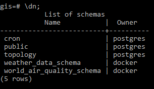
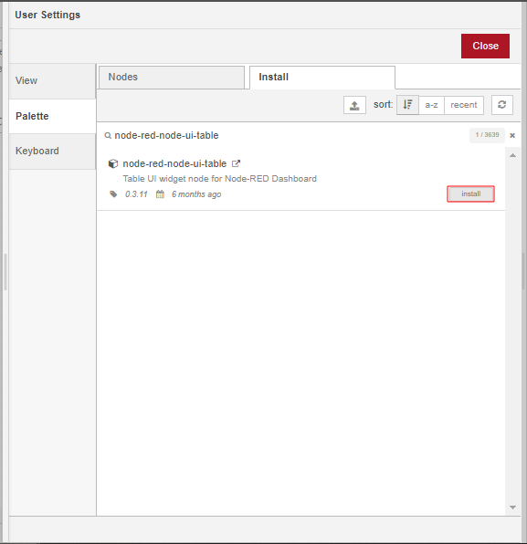
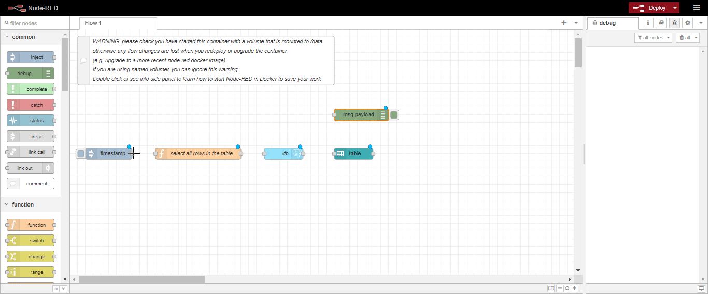

Node-red workflow that accesses data in Postgres¶
Deploy the Node-red service¶
Deploy the Nginx and Hugo Watcher services¶
To deploy the initial stack, which includes the Nginx and Hugo Watcher services, please run either make configure-ssl-self-signed or make configure-letsencrypt-ssl.
Deploy the Postgres and PostGIS service¶
Next, deploy the Postgres and PostGIS service using make deploy-postgres. If you already have PostgreSQL already installed outside of the stack on your local machine, ensure that you specify a different Postgis Public Port number other than the default port, 5432. For example, you can use the port 5434.
Import the Node-RED example data into the gis database¶
In this workflow we will be creating a flow that connects to a table in Postgres, selects all the rows in the table and puts them into a table in a dashboard in Node-RED.
The data we will be using in this workflow is day time temperature forecast data for Nairobi, Kenya from OpenWeatherMap. To import the example data into the gis database, run the following command make add-node-red-example-data. To verify that the data has been imported, create a psql shell using make db-psql-shell and run \dn; in the psql shell. The gis database should now contain the weather-data-schema and the world_air_quality_schema schemas as seen below:

The weather_data_schema should contain the following tables:

Deploy the Node-RED Service¶
Deploy the Node-RED service using make deploy-node-red. To add the node-red-contrib-postgres-multi package to Node-RED, run make deploy-node-red-patch then restart the service using make restart-node-red.
Accessing the Node-RED Service¶
The Node-RED service can now be accessed on /node-red/ e.g. https://localhost/node-red. Use the NGINX_AUTH_USER and NGINX_AUTH_PWD specified in the .env file to sign in into the Node-RED editor.
Create the Flow¶
Install the non-default nodes¶
To get started, we will first install the table node, which is not available by default in Node-RED. In the Header section of the Node-RED Editor, click on the main menu (the hamburger icon) and select the Manage Palette option.

Under the Palette tab of the User Settings dialog click on the Install tab. Search for the node-red-node-ui-table module using the search bar and install it by clicking the install button. Install the node-red-dashboard module in the same way. Once the modules have been installed, close the User Settings.


Add nodes to the workspace¶
From the palette on the left of the workspace of the Node-RED Editor, drag and drop onto the workspace an inject node (from the common category), a function node (function category), a postgres node(storage category), a table node (dashboard category) and a debug node (common category).

Connect to the gis database¶
To configure the postgres node to connect to a database, double click on the node which will open the Edit dialog. Click on the pencil icon next to the Server Properties input box and specify the following properties:
| Property | Input |
|---|---|
| Host | db |
| Port | 5432 |
| Database | gis |
| Username | docker |
| Password | <POSTGRES_PASSWORD> |
Use the POSTGRES_PASSWORD specified in the .env file. Please ensure you have enabled SSL by checking Use SSL. Once your done with the configuration click on Add. In the Name input box specify the name of the node as db, check the Receive query output? box, then click on Done.


Query the database¶
To query the database we have connected to above, we will need to assemble the query as an array of objects on msg.payload using the function node. We will select all data in the nairobi_7d_temp_forecast table of the weather_data_schema schema using the SELECT statement: SELECT * FROM weather_data_schema.nairobi_7d_temp_forecast;. Double click on the function node to open the Edit dialog. Configure the function node as shown in the image below then click on Done.

Display the query results¶
We will display the results of the query using the table node. Double click on the table node and accept the default configuration for the table node. For the Group properties:
Add a new dashboard tab called
Temperature:
Name the group that the dashboard table will be assigned to:

For the table columns add 9 columns using the add button  . Specify the Property and Title properties of the 9 columns as follows but leave the align, width and format properties with their defaults:
. Specify the Property and Title properties of the 9 columns as follows but leave the align, width and format properties with their defaults:
| Column | Property | Title |
|---|---|---|
| 1 | observation_date | Observation Date |
| 2 | day_0 | Today’s temperature |
| 3 | day_1 | Day 1 |
| 4 | day_2 | Day 2 |
| 5 | day_3 | Day 3 |
| 6 | day_4 | Day 4 |
| 7 | day_5 | Day 5 |
| 8 | day_6 | Day 6 |
| 9 | day_7 | Day 7 |
Click on Done once finished.

Connect the nodes in the flow as follows, click on Deploy then click on the inject node to manually trigger the flow:

The Node-RED dashboard display can now be accessed on /ui/ e.g. https://localhost/ui.